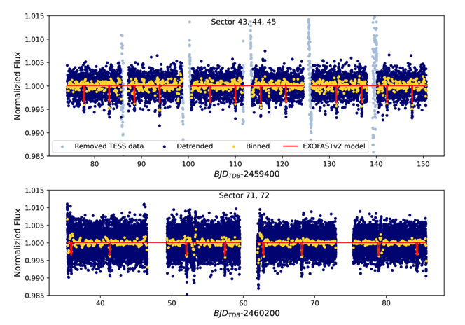
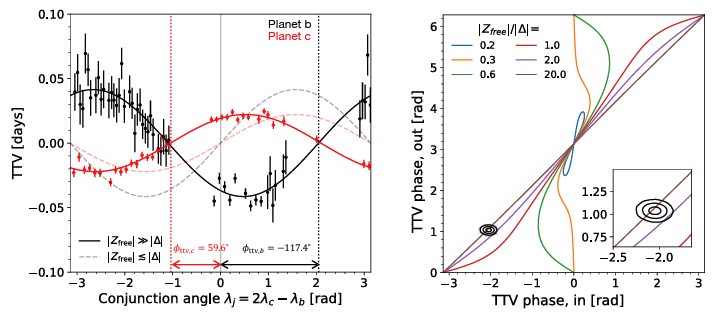
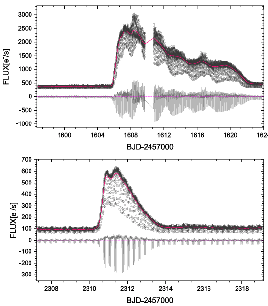

Welcome TESS followers to our latest news bulletin!1
This week, we are looking at three recent papers from the archive. Enjoy!
In the first paper, astronomers have confirmed the discovery of two low-mass transiting brown dwarfs — TOI-4776 b and TOI-5422 b — found in a sparsely populated region of brown dwarf mass-period space known as the "brown dwarf desert." The two objects have comparable masses of approximately 32 and 28 Jupiter masses, respectively, but differ significantly in age, offering a rare opportunity to study brown dwarf evolution across time. Analysis reveals that the younger TOI-4776 b has an unexpectedly inflated radius, while the older TOI-5422 b is unusually compact — both presenting intriguing challenges to current substellar evolutionary models. These discoveries add valuable new data points to the still-growing census of transiting brown dwarfs and deepen our understanding of objects that straddle the boundary between giant planets and stars.
Next we outline a paper confirming the discovery of two planets orbiting the F-type star TOI-4495 — a sub-Neptune (TOI-4495 b) and a Neptune-like planet (TOI-4495 c) — with orbital periods of 2.567 and 5.185 days, placing them tantalizingly close to a 2:1 mean-motion resonance. Both planets harbor volatile-rich gaseous atmospheres and their orbits are well-aligned with one another and with the spin axis of their host star. The system's unusual dynamical state points to a complex formation history involving convergent disk migration and additional eccentricity-exciting processes that are not yet fully explained.
The third paper reports the most comprehensive photometric study to date of OY Carinae (OY Car), an eclipsing dwarf nova — a type of cataclysmic variable star in which a white dwarf accretes material from a companion star, occasionally producing dramatic outbursts. By combining decades of ground-based observations with archival data from citizen astronomers and space-based photometry, the team uncovered new details about OY Car's long-term orbital evolution, outburst behavior, and the possible presence of a giant planet orbiting the binary system. The findings paint a richly complex picture of a system driven by a combination of disk instabilities, tidal interactions, and potentially a hidden circumbinary companion.
An Oasis in the Brown Dwarf Desert: Confirmation of Two Low-mass Transiting Brown Dwarfs Discovered by TESS (Zhang et al. 2026) : Brown dwarfs occupy a unique and poorly understood niche in astrophysics, falling between giant planets and low-mass stars in terms of mass, and their formation mechanisms remain actively debated. In a new study published in The Astronomical Journal (Zhang et al. 2026), researchers present the confirmed discovery and characterization of two low-mass transiting brown dwarf systems — TOI-4776 b and TOI-5422 b — both residing in the "brown dwarf desert," where short-period substellar companions to main-sequence stars are relatively rare. TOI-4776 b, the younger of the two at approximately 4.7 billion years old, has a mass of 32.3 Jupiter masses and an orbital period of roughly 10.41 days around a late-F type host star; its measured radius of 1.01 Jupiter radii is larger than substellar evolutionary models predict, suggesting possible inflation driven by ohmic dissipation or magnetically inhibited convection. TOI-5422 b, orbiting a subgiant host star with a period of approximately 5.38 days, is estimated to be around 7.6 billion years old — one of the oldest known transiting brown dwarfs — with a mass of 28.0 Jupiter masses and a compact radius of just 0.81 Jupiter radii that falls below even the oldest substellar evolutionary isochrones, possibly due to advanced cooling and a large interior heavy-element fraction. The TOI-5422 system also displays photometric modulations consistent with a stellar rotation period of 10.8 days, roughly twice the brown dwarf's orbital period, suggesting the companion is tidally spinning up its host star and that the system may be caught at a rare transitional stage between orbital circularization and spin-orbit synchronization. The stellar inclination angle of TOI-5422 was measured at approximately 76 degrees, consistent with the brown dwarf's orbit being aligned with the stellar spin axis. Together, these two systems provide a powerful comparative test of substellar evolutionary models across different stages of brown dwarf cooling and contraction. TESS was essential to these discoveries, delivering the space-based photometric light curves that first revealed the transit signatures of both objects and capturing the stellar rotation modulations in TOI-5422 that enabled the spin-orbit analysis — with TESS now responsible for more than two-thirds of all known transiting brown dwarf discoveries.
TOI-4495: A Pair of Aligned, Near-resonant Sub-Neptunes That Likely Experienced Overstable Migration (Wang et al. 2026) : TOI-4495 b has a mass of 7.7 ± 1.4 Earth masses and a radius of 2.48 Earth radii, while the outer planet, TOI-4495 c, is significantly more massive at 23.2 ± 4.7 Earth masses with a radius of 4.03 Earth radii — the low bulk densities of both planets strongly suggest the presence of hydrogen/helium-dominated or water-enriched atmospheres. Spectroscopic follow-up using the Keck Planet Finder (KPF) instrument during a transit of TOI-4495 c revealed a well-aligned orbit, with a projected stellar obliquity of just -2.3 degrees, consistent with zero — a finding further supported by Doppler shadow analysis. Despite their proximity to the 2:1 mean-motion resonance, detailed dynamical modeling confirmed that the planets are near but not actually in resonance, with their resonant angle circulating rather than librating. Intriguingly, the inner planet TOI-4495 b displays a significant free eccentricity of 0.078 — unusually high for such a close-in planet — which cannot be fully explained by resonant interactions alone and instead points to additional dynamical excitation, such as disk turbulence, planetesimal scattering, or an undetected outer companion. Dynamical simulations suggest that a process called "resonant overstability" during disk migration could partially explain the observed eccentricity, but additional mechanisms are still required to account for the full observed value. The system's age of approximately 1.9 billion years and the absence of detected Hα atmospheric absorption during transit are consistent with theoretical expectations that significant atmospheric escape winds down early in a planet's life. Tidal modeling implies that TOI-4495 b must have a reduced tidal quality factor greater than 10⁵ — similar to that of gas giants — to have preserved its eccentricity against tidal damping over the system's lifetime, consistent with the presence of a thick gaseous envelope. These results were enabled in large part by TESS, which observed TOI-4495 across seven sectors from 2019 to 2024, providing the high-precision, 2-minute cadence light curves that revealed the transit signals of both planets and the transit timing variations essential to the dynamical mass measurements.
A Comprehensive Photometric Study of the Eclipsing SU UMa-type Cataclysmic Variable OY Carinae (Han et al. 2026) : Eclipse timing analysis spanning approximately 46 years revealed that OY Car's orbital period is secularly increasing at a rate of +5.70 × 10⁻¹³ seconds per second — a finding that cannot be explained by standard mass transfer between the white dwarf and donor star, nor by the system having evolved into a so-called "period bouncer," leaving the underlying cause as an open and intriguing question. Superimposed on this secular trend is a cyclic oscillation with an amplitude of 57.11 seconds and a period of 33.41 years, most plausibly interpreted as a light travel time effect caused by the gravitational tug of an unseen circumbinary giant planet with an estimated mass of 11.5 ± 3.1 Jupiter masses orbiting at approximately 12.13 AU. During both the normal outburst and the superoutburst, the data exhibited distinct hysteresis loops, confirming that the accretion disk undergoes significant expansion during outburst events, while the quiescent slope deviating significantly from unity prior to the superoutburst suggests the disk was already structurally larger and more massive beforehand — consistent with the thermal-tidal instability model. The normal outburst was identified as an "outside-in" (Type A) event, and during the superoutburst, a quasi-periodic oscillation in eclipse timing provided compelling evidence for a precessing eccentric accretion disk with a mean precession period of 2.84 ± 0.02 days. Analysis of superhump evolution identified the standard three-stage (A, B, C) progression, with a positive period derivative during stage B confirming that pressure effects within the accretion disk significantly influence its precession. These results were greatly aided by TESS, whose continuous, high-cadence 2-minute photometry across three observing cycles between 2019 and 2023 captured complete outburst events without the gaps inherent to ground-based nightly campaigns, enabling the full three-stage superhump evolution of OY Car to be traced in detail for the first time.

Fig. 1: Taken from Zang et al., (2026). Detrended TESS light curves for TOI-5422, showing brightness measurements collected at 10-minute cadence during Sectors 43, 44, and 45, and at higher 2-minute cadence during Sectors 71 and 72. The recurring dips in brightness mark the transits of the brown dwarf TOI-5422 b, with the best-fit model shown in red. The light curves also reveal additional brightness variations caused by the host star's rotation, which were removed prior to the transit analysis.

Fig. 2: Taken from Wang et al., (2026). Illustrates the key dynamical evidence for significant free eccentricity (the intrinsic, non-circular shape of a planet's orbit that is not caused by gravitational interactions with a neighboring planet) in the TOI-4495 system. The left panel shows the measured transit timing variations (TTVs) of both planets — TOI-4495 b (black) and TOI-4495 c (red) — plotted against the conjunction angle. If the planets' free eccentricity were negligibly small, the TTV signals would follow simple sinusoidal curves with no phase offset (shown as dashed lines). Instead, the observed TTVs display clear and measurable phase shifts of -117.4 ± 3.5° for the inner planet b and 59.5 ± 2.2° for the outer planet c — a strong signature that the free eccentricity in this system is substantial, not negligible. The right panel reinforces this conclusion by mapping the measured TTV phases onto a theoretical framework showing expected phase behavior for different values of free eccentricity near the 2:1 mean-motion resonance. The data favor free eccentricity values several times larger than the system's distance from exact resonance, confirming that TOI-4495 b and c have been dynamically excited beyond what simple disk migration alone could produce — pointing to additional, more disruptive processes in the system's past.

Fig. 3: Taken from Han et al., (2026). The TESS light curves of OY Carinae capturing two distinct outburst events — a superoutburst (top panel) and a normal outburst (bottom panel). The superoutburst sees the system's flux surge from a quiescent baseline of 400 electrons per second to nearly 3,000, lingering for 18 days with characteristic superhump brightness modulations rippling through the light curve near peak. The normal outburst, by contrast, shows a sharp, clean rise to 600 electrons per second followed by a smooth decay over just 4 days, with no superhumps present. Throughout both panels, the recurring deep dips of white dwarf eclipses are clearly visible, allowing eclipse depth, width, and timing to be tracked continuously across the full outburst cycle — a feat impossible with nightly ground-based observations alone.
-
This news item was created with input from OpenAI / NASA GSFC, 2026 ↩